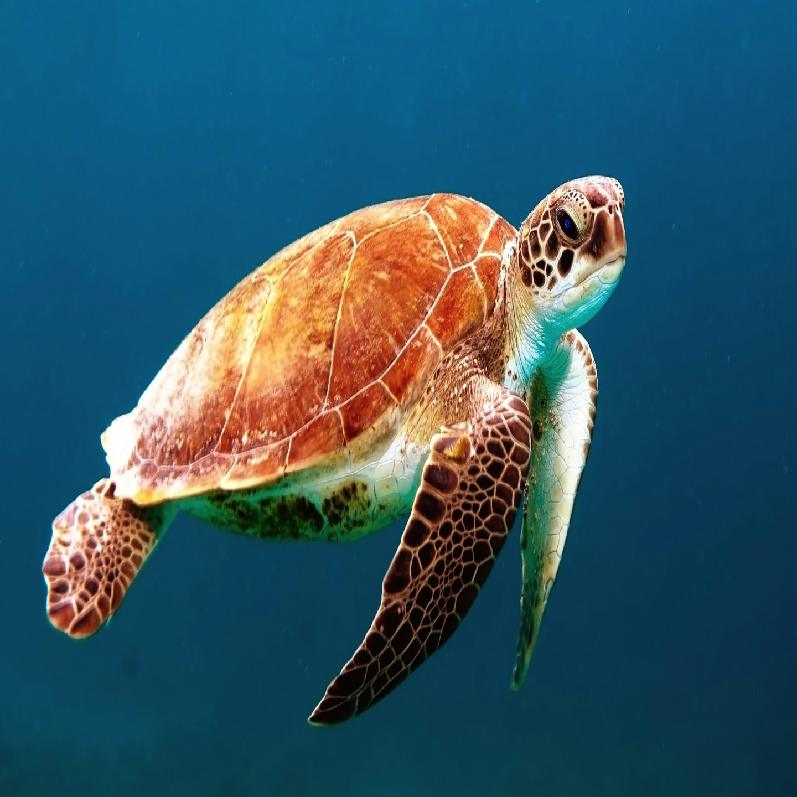
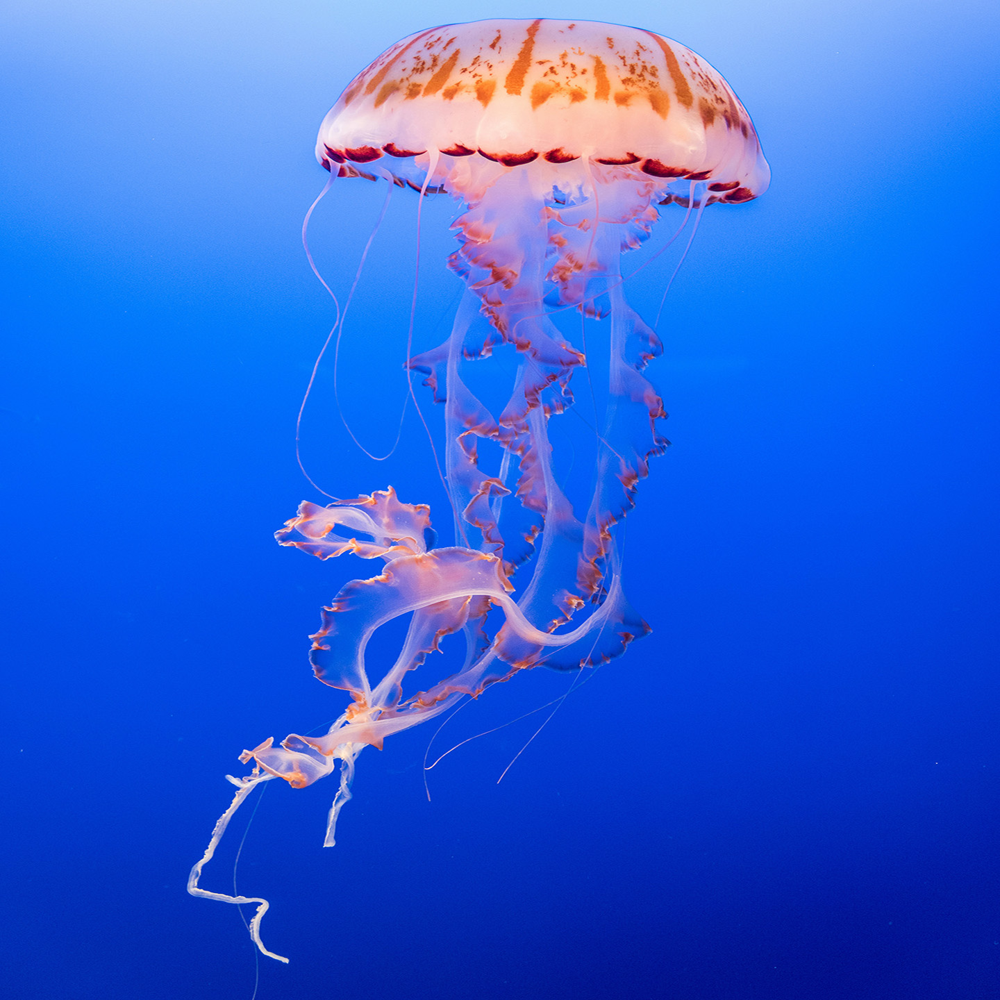
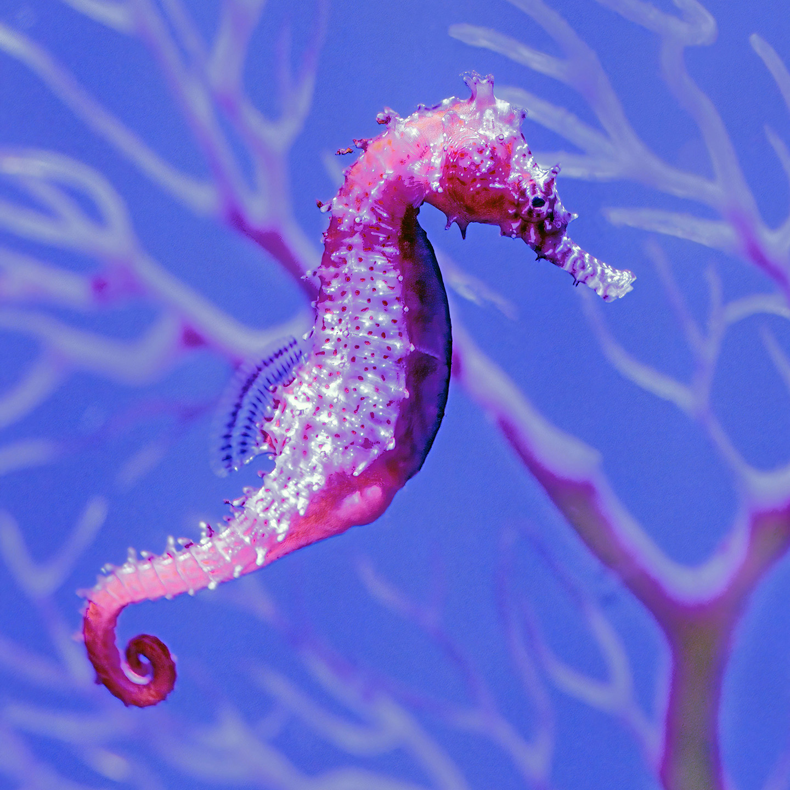
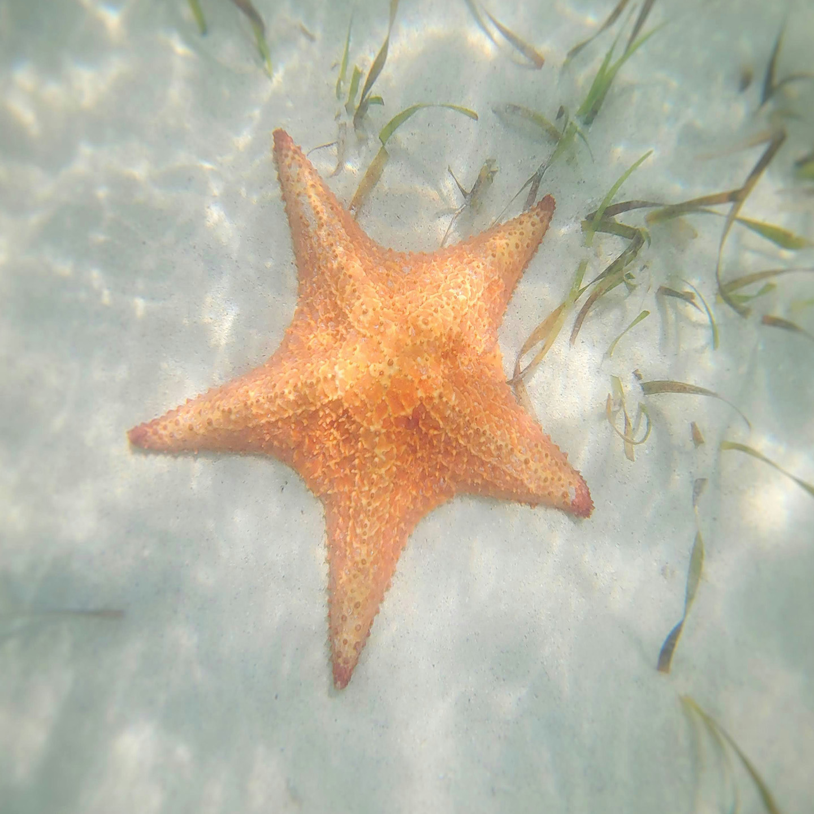

Seahorses
Delicate marine creatures that need calm waters, specialized care, and a carefully maintained habitat to stay healthy.
- These creatures eat small foods like brine shrimp and tiny crustaceans.
- They need a calm saltwater habitat with plants or coral to hold onto.
- Clean water with stable temperature and salt levels is essential.
- Are known to be delicate and can become stressed easily.
- They do best in peaceful environments without aggressive tank mates.

Starfish
Unique ocean dwellers that need stable saltwater conditions and a carefully maintained environment to remain healthy.
- Enjoys foods like algae, small shellfish, or leftover organic matter depending on the species
- They need a stable saltwater tank with rocks or surfaces to explore.
- Proper water quality and salt balance are very important for survival.
- Will move slowly and use tiny tube feet to get around.
- Some species can regrow lost arms over time.


Turtles
These are gentle, long-living ocean animals that require specialized care and plenty of space to thrive.
- These creatures eat foods like seagrass, algae, jellyfish, or small sea animals depending on the species.
- They need a large saltwater habitat with plenty of swimming space.
- Warm, clean water with the correct salt levels is important for their health.
- They can live for many decades, so they require long-term care.
- Many species are protected, so ownership may be restricted or require special permits.

Jellyfish
These are gentle, long-living ocean animals that require specialized care and plenty of space to thrive. In order to have one please keep in mind:
- Loves to eat plankton, small fish, or specially prepared jellyfish food.
- They need a specialized rounded tank to prevent injury while drifting.
- Water must stay extremely clean with proper salt levels and temperature.
- They're extremely fragile and can be easily injured by strong currents or rough surfaces.
- Some jellyfish can sting, so handling requires caution, keeping a first aid kit around is recommended.